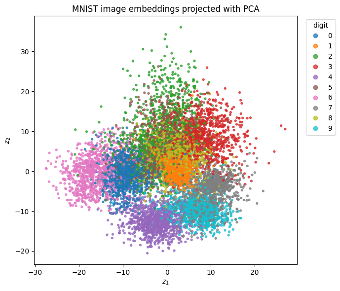
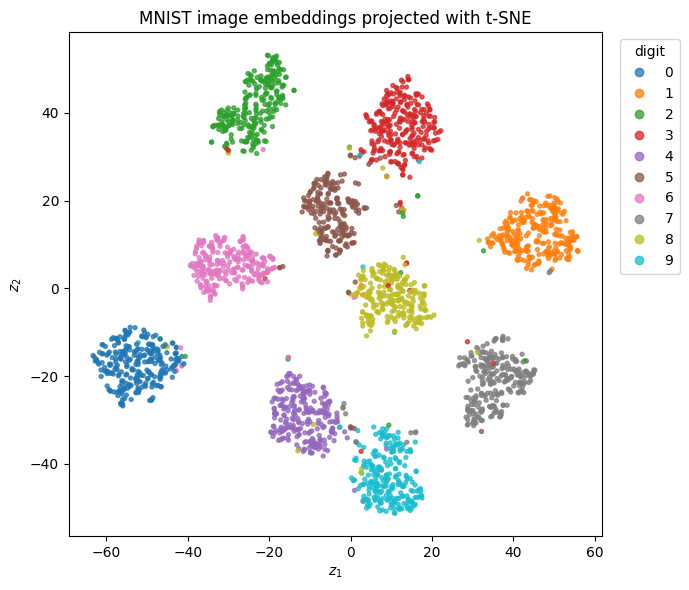

%pip install torch torchvision numpy matplotlib scikit-learnMNIST image embeddings with PyTorch
This notebook trains a simple feedforward encoder on MNIST. The hidden bottleneck vector is used as an image embedding. After training, we extract embeddings for test images and visualize them in 2-D with PCA or t-SNE.
Requirements: torch, torchvision, numpy, matplotlib, scikit-learn.
Requirements
Run the next cell if PyTorch and the plotting packages are not installed. The command below installs the CPU version, which is enough for MNIST. For CUDA-specific installs, use the selector at https://pytorch.org/get-started/locally/.
from pathlib import Path
import numpy as np
import matplotlib.pyplot as plt
import torch
from torch import nn
import torch.nn.functional as F
from torch.utils.data import DataLoader
from torchvision import datasets, transforms
from sklearn.decomposition import PCA
from sklearn.manifold import TSNE
FIG_DIR = Path('figs/figs-embeddings')
FIG_DIR.mkdir(parents=True, exist_ok=True)
device = 'cuda' if torch.cuda.is_available() else 'cpu'
torch.manual_seed(7)
print(device)cpuLoad MNIST
Each image has shape 1 x 28 x 28. The model below is intentionally feedforward: it flattens the pixels and passes them through linear layers.
transform = transforms.ToTensor()
train_ds = datasets.MNIST(root='data', train=True, download=True, transform=transform)
test_ds = datasets.MNIST(root='data', train=False, download=True, transform=transform)
train_loader = DataLoader(train_ds, batch_size=256, shuffle=True, num_workers=2)
test_loader = DataLoader(test_ds, batch_size=512, shuffle=False, num_workers=2)
x, y = next(iter(train_loader))
print(x.shape, y.shape)torch.Size([256, 1, 28, 28]) torch.Size([256])Define a feedforward embedding model
The encoder maps the image to an embedding vector \(z \in \mathbb{R}^{16}\). A linear classifier predicts the digit from that embedding.
class MNISTEmbeddingNet(nn.Module):
def __init__(self, embedding_dim=16):
super().__init__()
self.encoder = nn.Sequential(
nn.Flatten(),
nn.Linear(28 * 28, 256),
nn.ReLU(),
nn.Linear(256, embedding_dim),
)
self.classifier = nn.Linear(embedding_dim, 10)
def forward(self, x, return_embedding=False):
z = self.encoder(x)
logits = self.classifier(z)
return (logits, z) if return_embedding else logits
model = MNISTEmbeddingNet(embedding_dim=16).to(device)
optimizer = torch.optim.Adam(model.parameters(), lr=1e-3)
modelMNISTEmbeddingNet(
(encoder): Sequential(
(0): Flatten(start_dim=1, end_dim=-1)
(1): Linear(in_features=784, out_features=256, bias=True)
(2): ReLU()
(3): Linear(in_features=256, out_features=16, bias=True)
)
(classifier): Linear(in_features=16, out_features=10, bias=True)
)Train with cross-entropy
The embedding is learned because the classification loss backpropagates through the classifier into the encoder.
def accuracy(loader):
model.eval()
correct, total = 0, 0
with torch.no_grad():
for x, y in loader:
x, y = x.to(device), y.to(device)
pred = model(x).argmax(dim=1)
correct += (pred == y).sum().item()
total += y.numel()
return correct / total
history = []
for epoch in range(5):
model.train()
running_loss = 0.0
for x, y in train_loader:
x, y = x.to(device), y.to(device)
logits = model(x)
loss = F.cross_entropy(logits, y)
optimizer.zero_grad()
loss.backward()
optimizer.step()
running_loss += loss.item() * y.numel()
train_loss = running_loss / len(train_ds)
test_acc = accuracy(test_loader)
history.append((train_loss, test_acc))
print(f'epoch={epoch+1} loss={train_loss:.4f} test_acc={test_acc:.3f}')epoch=1 loss=0.5203 test_acc=0.930
epoch=2 loss=0.2029 test_acc=0.952
epoch=3 loss=0.1454 test_acc=0.961
epoch=4 loss=0.1103 test_acc=0.969
epoch=5 loss=0.0865 test_acc=0.971Extract image embeddings
After training, we use the encoder output as the representation of each image.
model.eval()
Z, Y = [], []
with torch.no_grad():
for x, y in test_loader:
x = x.to(device)
logits, z = model(x, return_embedding=True)
Z.append(z.cpu())
Y.append(y)
Z = torch.cat(Z).numpy()
Y = torch.cat(Y).numpy()
print(Z.shape, Y.shape)(10000, 16) (10000,)Visualize with PCA and t-SNE
PCA is deterministic and fast. t-SNE often produces clearer local clusters, but the global layout is less reliable.
def plot_embedding(Z2, Y, title, filename):
plt.figure(figsize=(7, 6))
scatter = plt.scatter(Z2[:, 0], Z2[:, 1], c=Y, s=8, cmap='tab10', alpha=0.75)
plt.legend(*scatter.legend_elements(), title='digit', bbox_to_anchor=(1.02, 1), loc='upper left')
plt.title(title)
plt.xlabel('$z_1$')
plt.ylabel('$z_2$')
plt.tight_layout()
plt.savefig(FIG_DIR / filename, dpi=300)
plt.show()
Z_pca = PCA(n_components=2, random_state=7).fit_transform(Z)
plot_embedding(Z_pca, Y, 'MNIST image embeddings projected with PCA', 'mnist_pytorch_embedding_pca.png')
subset = np.random.default_rng(7).choice(len(Z), size=2500, replace=False)
Z_tsne = TSNE(n_components=2, perplexity=30, init='pca', learning_rate='auto', random_state=7).fit_transform(Z[subset])
plot_embedding(Z_tsne, Y[subset], 'MNIST image embeddings projected with t-SNE', 'mnist_pytorch_embedding_tsne.png')

Use embeddings for nearest-neighbor retrieval
The same vectors can be used for image retrieval by cosine similarity.
Zn = Z / np.linalg.norm(Z, axis=1, keepdims=True)
query_id = 0
scores = Zn @ Zn[query_id]
neighbors = np.argsort(-scores)[1:11]
print('query label:', Y[query_id])
print('neighbor labels:', Y[neighbors].tolist())query label: 7
neighbor labels: [7, 7, 7, 7, 7, 7, 7, 7, 7, 7]